常用指令
- vim 访问文本
- 退出文本并保存 :wq
- 返回到上一个文件夹 cd . .
- 解压指令 tar -zxvf xxxx.tar.gz
vi vim 操作
- i o a r 进入vim
- 按下esc , 输入**:** 然后输入wq 保存并退出 :q退出 :q! 不保存退出
- yy 拷贝 5yy
- dd 删除 5dd
- 撤销 u
- 行号打开 :set nu
关机
- shutdown -h 关机
- shutdown -r 重启
- reboot 重启
- sync 把内存数据存入磁盘
注销用户和登录
-
logout
-
退出root logout
压缩/解压指令
- tar -zxvf xxxx.tar.gz
- gzip 文件 压缩
- gunzip 解压文件
- zip 压缩文件夹
- unzip 解压文件夹
- -r 递归压缩 zip -r xxxxx.zip /home/ [将home目录及其包含的的文件和子文件夹都压缩]
- -d <可指定目录> unzip -d /opt/tmp /home/xxxxx.zip
- tar 万能
- tar -c 产生打包文件
- -v 显示详细信息
- -f 指定压缩后的文件名
- -z 打包并同时压缩
- -x 解压.tar文件
帮助指令
-
man ls 列出所有指令
-
help + 指令
-
ls -la
-
ls -la /root
文件目录指令
- pwd 显示出地址
- cd ~ 回到家目录
- cd .. 上一目录
- mkdir 创建目录
- mkdir -p /home/…/…. 创建指定目录
- rmdir 删除空目录 强制删除空目录 rm -rf
- touch 创建空文件
- cp 拷贝 cp hello.txt /bbb
- cp -r /home/bbb /opt 把目录复制到指定目录下
- \cp -r /home/bbb /opt 强制
- rm 删除文件或目录
- rm -rf /home/bbb 强制删除 -f 就是强制删除不提醒
- mv 移动指令
- cat 查看文件 -n 行号
- less 分屏查看
- echo $HOSTNAME 输出环境变量
- head 查看文件的前几行 -> 10 行 head xxxx.c
- tail 查看末尾文件 tail xxxx.c
- ln -s /root /home/myroot 快捷指令指向 在myroot创建指向/root的快捷方式, cd myroot 就会直接进入/root
文件管理
- 使用
mkdir创建目录。例如，mkdir xxxx将在当前位置创建一个名为 “xxxx” 的目录。 - 要创建多级目录，可以使用
mkdir -p命令。例如，mkdir -p xxx/yyy将在 “xxx” 目录下创建一个名为 “yyy” 的子目录。 - 使用
mkdir -m 777命令创建目录时，可以直接设置权限。数字 “777” 表示所有权限（读、写和执行）。另外，“4” 代表读权限，“2” 代表写权限，“1” 代表执行权限。 mv命令用于移动文件或重命名文件。例如，mv xxx.c /home/zzz/targetPlace将把 “xxx.c” 文件移动到 “/home/zzz/targetPlace” 目录。- 使用
cp命令复制文件。例如，cp xxx.c /home/zzz/targetPlace将把 “xxx.c” 文件复制到 “/home/zzz/targetPlace” 目录。 - 若要复制目录，应使用
cp -r命令。例如，cp -r /home/bbb /opt将把 “/home/bbb” 目录复制到 “/opt” 目录。 rm用于删除文件或目录，而rmdir仅用于删除空目录。删除文件时，使用rm 文件名；删除目录（及其内容）时，使用rm -r 目录名；删除空目录时，使用rmdir 目录名。- 使用
chown和chgrp命令更改文件的所有权。例如，chown -R root /home/zzz/targetPlace/xxx.c将把 “xxx.c” 文件的所有权更改为 root 用户。同理，使用chgrp命令更改文件的群组所有权。 - 使用
chmod命令更改文件或目录的权限。例如，chmod 777 xxxx（目录）将为名为 “xxxx” 的目录设置所有权限（读、写和执行）。 ln命令用于创建链接，类似于快捷方式。例如，ln 路径/xxx.c newxxx.c将在当前位置创建一个指向 “xxx.c” 的新链接 “newxxx.c”。若要删除快捷方式，可以使用rm -rf命令。- 输入/输出重定向是一种将命令的输出发送到文件而不是屏幕的技术。例如，
date > xx.txt将当前日期和时间写入 “xx.txt” 文件。而date >> xx.txt会将日期和时间追加到文件的末尾，常用于日志、脚本和文件中。
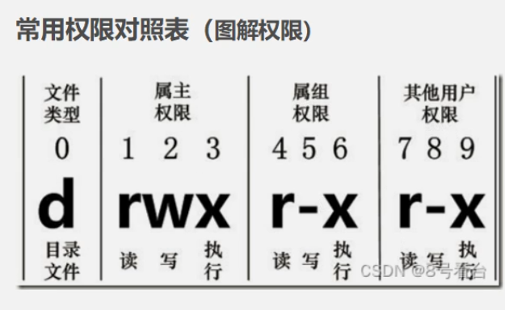
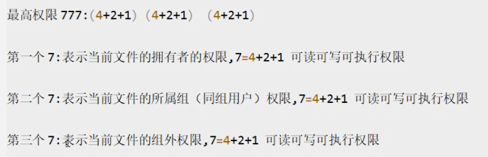
cat命令
-
使用
cat > xxxx.c创建一个新文件 “xxxx.c”。此命令进入文本输入模式，可以直接输入内容，输入完成后按Ctrl+D保存并退出。 -
合并文件可以使用
cat命令。例如，cat tx1.c tx2.c > tx3.c将分别将 “tx1.c” 和 “tx2.c” 的内容合并并输出到 “tx3.c” 文件中。 -
要向文件末尾添加内容，使用
cat >> tx.c。此命令进入文本输入模式，输入完内容后，同样按Ctrl+D保存并退出。
more命令
- 使用
more命令可以逐屏查看大型文件。例如，more -3 tx将从文件 “tx” 的第三行开始显示内容。使用方向键或空格键可以向下滚动，按q退出查看。
grep命令
- 使用
grep -i "abc....." xxxx.c查找文件 “xxxx.c” 中的内容，-i选项使搜索不区分大小写。 - 使用
grep -n -i "abc....." xxxx.c查找文件 “xxxx.c” 中的内容，-n选项会显示匹配行的行号，且同样不区分大小写。
find命令
- 使用
find -name 'tex*'查找当前目录及子目录中以 “tex” 开头的文件，支持模糊查找。 - 使用
find -name 'te??.c'查找当前目录及子目录中以 “te” 开头，后跟任意两个字符且以 “.c” 结尾的文件。 - 使用
find -name '[a-z]*.c'查找当前目录及子目录中以小写字母开头且以 “.c” 结尾的文件。
locate 命令
- 要快速定位文件，可以使用
locate xxxx命令。此命令通过查询系统中的文件数据库，迅速找出包含 “xxxx” 的文件路径。请确保在使用前更新数据库，通常可以通过updatedb命令实现。
who 命令
- 使用
who查看当前登录的用户。 - 使用
who -a查看详细的用户信息，包括登录时间和终端等。 - 使用
whoami查看当前用户的用户名。 - 使用
uname命令查看主机信息，uname -a则显示所有相关信息，包括主机名、内核版本、硬件架构等。常用选项包括：-n: 显示主机名-r: 显示内核版本-v: 显示内核版本号-m: 显示机器硬件名称-p: 显示处理器架构-i: 显示硬件平台-o: 显示操作系统名称
man命令
-
要查看命令手册，可以使用
man命令。具体示例：- 使用
man ls查看ls命令的说明书。这将打开ls命令的手册页，其中包括用法、选项和示例等详细信息。
要退出手册页，可以按
q。 - 使用
软件包管理
-
apt-get 命令 下载/卸载/管理 软件包
-
which 命令查找位置
-
使用
apt-get命令下载、卸载和管理软件包。例如：apt-get install package_name安装软件包。apt-get remove package_name卸载软件包。
-
使用
which命令查找可执行文件的位置。例如，which command_name将显示该命令的完整路径。
不同系统管理
Debian/Ubuntu 系统
- 下载软件包:
apt-get install package_name - 卸载软件包:
apt-get remove package_name - 更新软件包列表:
apt-get update - 升级软件包:
apt-get upgrade
Red Hat/CentOS 系统
- 下载软件包:
yum install package_name - 卸载软件包:
yum remove package_name - 更新软件包列表:
yum check-update - 升级软件包:
yum update
Arch Linux 系统
- 下载软件包:
pacman -S package_name - 卸载软件包:
pacman -R package_name - 更新软件包列表和升级:
pacman -Syu
macOS (使用 Homebrew)
- 下载软件包:
brew install package_name - 卸载软件包:
brew uninstall package_name - 更新软件包列表:
brew update - 升级软件包:
brew upgrade
Windows (使用 Chocolatey)
- 下载软件包:
choco install package_name - 卸载软件包:
choco uninstall package_name - 更新软件包:
choco upgrade all
文件系统类型
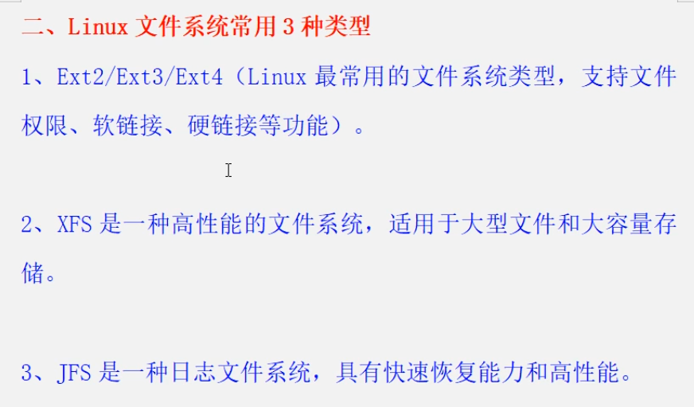
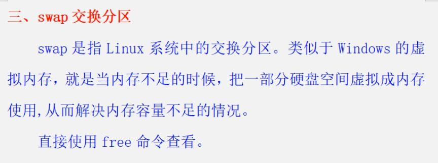
- 查看swap信息并更改单位显示：
free -h。 - 挂载文件系统：使用
sudo mount命令挂载文件系统到指定目标点，例如sudo mount /dev/xxx/yyy target。其中，target是挂载点。 - 卸载已挂载的文件系统：使用
umount命令卸载挂载点，例如umount target。 - 查询磁盘使用情况：使用
df -h命令查看磁盘的可用空间等信息。 - 检查或修改文件系统：使用
fsck命令进行磁盘检查和修复。可以使用-C和-t $type $路径参数来指定检查的类型和路径。具体语法可查看fsck --help获取更多信息。 - 在磁盘上创建文件系统：使用
mkfs命令。具体文件系统类型可以通过查看系统支持的选项来确定。例如，创建ext4文件系统可以使用mkfs.ext4命令。 - 查看分区表：使用
fdisk -l $路径命令来查看指定设备的分区表信息。如果只是想列出当前系统所有设备，可以省略$路径参数。 - 使用gzip压缩工具：压缩文件使用
gzip xxxx.c，压缩目录使用gzip -r /home，解压使用gzip -d xxxx.c.gz。注意，gzip 会替换原始文件为.gz格式。 - 使用tar命令进行压缩和解压：查看tar的帮助信息可以使用
tar --help。压缩文件可以使用tar -cvf xxx.tar yyy.c ...，解压可以使用tar -xf xxx.tar -C $解压放置的位置。 - 使用bzip压缩和解压缩工具：压缩时使用
bzip2 filename生成.bz2文件，解压缩时使用bzip2 -d filename.bz2或bunzip2 filename.bz2。 - 使用zip命令创建和解压ZIP文件：压缩时使用
zip archive.zip file1 file2创建ZIP文件，解压时使用unzip archive.zip解压ZIP文件。
用户管理
- 查看用户信息，可以使用
cat /etc/passwd命令。 - 添加用户可以使用
useradd命令。例如，useradd xxxx将创建一个名为 “xxxx” 的新用户。 - 创建用户组使用
groupadd命令。例如，groupadd xxxxgroup将创建一个名为 “xxxxgroup” 的新用户组。查看所有用户组信息可以使用cat /etc/group。 - 要查看用户执行过的命令记录，可以使用
history命令。 - 使用
passwd命令更改密码。执行此命令后，系统会提示输入当前用户的旧密码以及新密码。 - 删除用户可以使用
userdel命令。例如，userdel xxxuser将删除名为 “xxxuser” 的用户。 - 管理用户账号，包括修改用户名，可以使用
usermod命令。例如，usermod -l new_name old_name将把 “old_name” 的用户名更改为 “new_name”。 - 查看用户信息，可以使用
id xxxname命令，这将显示名为 “xxxname” 的用户的详细信息。 - 用户切换可以使用
su命令。例如，su root将切换到 root 用户，而su xxxname将切换到名为 “xxxname” 的用户。 - 使用
sudo命令可以以管理员权限执行命令。在执行需要特权的命令前，输入sudo和该命令，然后输入管理员密码即可。
进程管理
- 监视进程：
- 使用
ps命令查看当前进程。 - 查看
ps手册：man ps。 - 常用选项：
- 显示所有进程：
ps -e - 显示不带终端的所有进程：
ps -au - 显示特定用户的进程：
ps -u root或ps -u xxxname - 显示详细信息：
ps -l
- 显示所有进程：
- 使用
- 跟踪进程：
- 使用
top命令监控进程。 - 自动更新 4 次后退出：
top -n 4 - 设置刷新时间为 5 秒：
top -d 5 - 仅监控特定进程 ID（如 1810）：
top -p 1810
- 使用
- htop 命令：
htop是top的升级版，提供更友好的用户界面和交互功能。
- 终止进程：
- 使用
kill命令终止进程。例如，kill 1201将关闭进程 ID 为 1201 的进程。
- 使用
- 设置进程优先级：
- 查看进程 nice 值并按降序排列：
ps axo pid,comm,nice --sort=-nice - 查看特定进程的 nice 值：
ps -p 1201 -o nice - 修改进程的 nice 值：
renice -n 10 -p 1201
- 查看进程 nice 值并按降序排列：
- 查看进程属性：
- 使用
pgrep命令查找进程。 - 常用命令：
- 查询特定进程名：
pgrep xxxname - 模糊查询进程名：
pgrep -l ^xxxname
- 查询特定进程名：
- 使用
性能监控
显示和配置网络设备
- 查看网络设备信息：
- 使用
ifconfig命令可以查看当前网络配置。 - 显示所有网络设备及其状态：
ifconfig
- 使用
- 帮助文档：
- 查看
ifconfig的帮助信息：ifconfig --help
- 查看
- 常用选项：
- 启用网络接口：
ifconfig eth0 up（将eth0替换为实际接口名） - 禁用网络接口：
ifconfig eth0 down - 设置 IP 地址：
ifconfig eth0 192.168.1.100 - 设置子网掩码：
ifconfig eth0 netmask 255.255.255.0 - 查看特定接口信息：
ifconfig eth0
- 启用网络接口：
现代替代工具
-
在许多现代 Linux 发行版中，
ifconfig已被
ip命令替代，建议使用：
- 查看网络设备信息：
ip addr - 启用接口：
ip link set eth0 up - 禁用接口：
ip link set eth0 down - 设置 IP 地址：
ip addr add 192.168.1.100/24 dev eth0
- 查看网络设备信息：
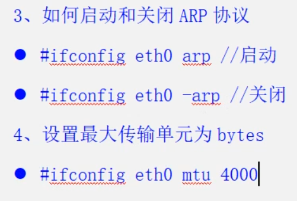
CPU 统计数据
-
iostat 命令
：
- 基本使用：
iostat显示 CPU 和 I/O 统计信息。 - 输出磁盘利用率：
iostat -d sda1（显示指定磁盘的利用信息）。 - 输出 CPU 和磁盘利用率：
iostat -t（包含时间戳）。 - 显示 CPU 和磁盘利用率的详细信息：
iostat -m（以兆字节为单位显示）。 - 查看 CPU 使用情况：
iostat -c（只显示 CPU 统计数据）。
- 基本使用：
I/O 监控
-
iotop 命令
：
iotop用于实时监控 I/O 使用情况。- 需要 root 权限，可以使用
sudo iotop来执行该命令。
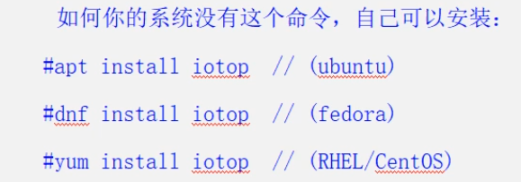
CPU 统计信息
-
mpstat 命令
：
- 使用
mpstat报告 CPU 统计信息。 - 显示 CPU 中断数：
mpstat -I SUM。
- 使用
虚拟内存统计
-
vmstat 命令
：
- 查看所有虚拟内存的统计信息：
vmstat -a。 - 输出磁盘统计数据：
vmstat -d。 - 报告虚拟内存统计的详细信息：
vmstat -s。
- 查看所有虚拟内存的统计信息：
shell 编程基础
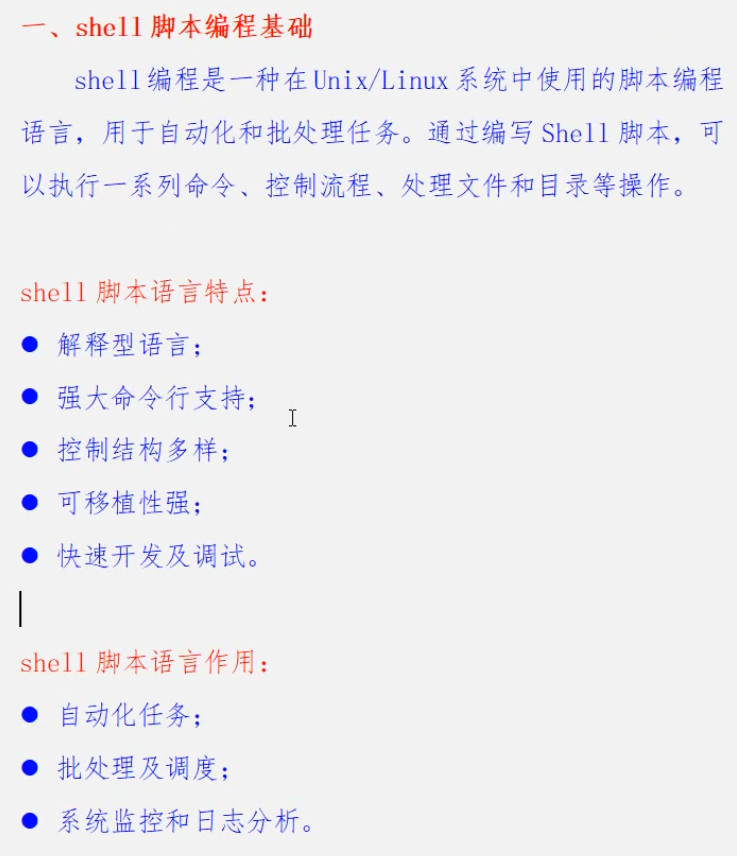
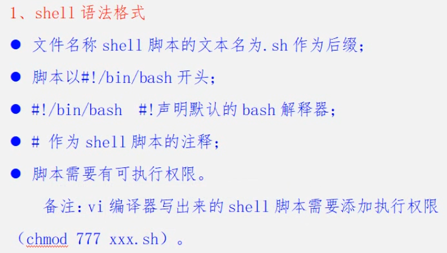
shell入门编程实例
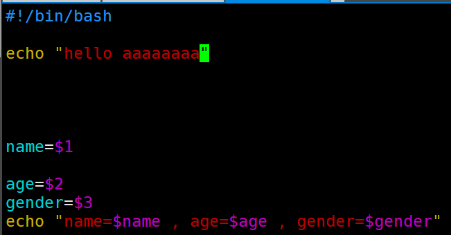
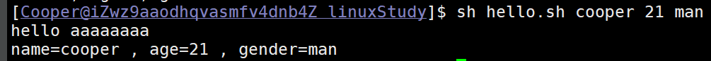
Linux C++引用
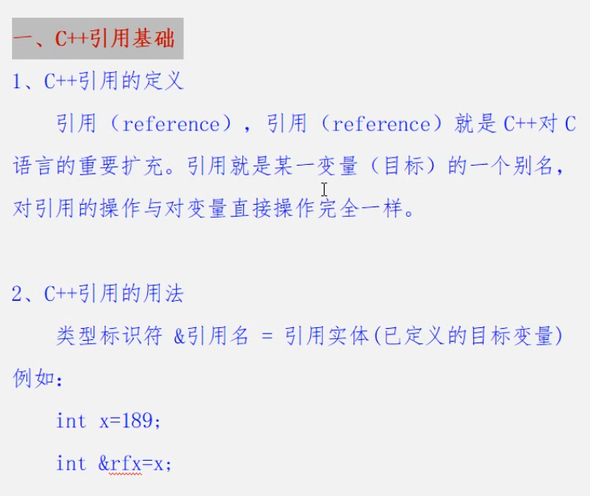
Linux C++智能指针
unique_ptr
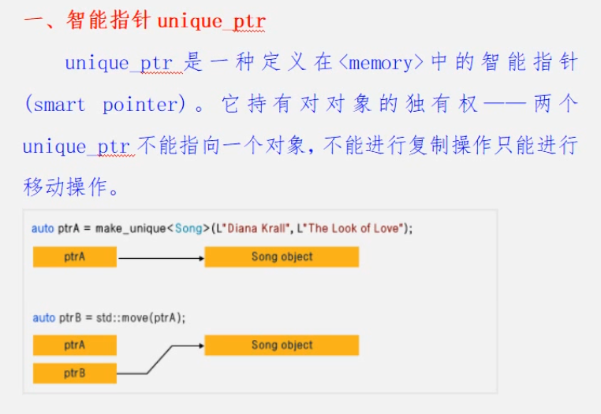
shared_ptr
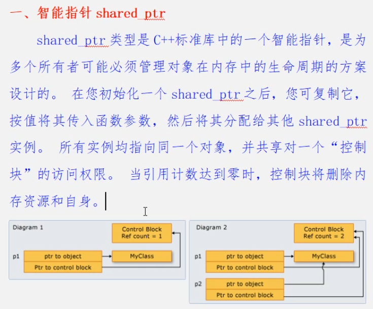
weak_ptr
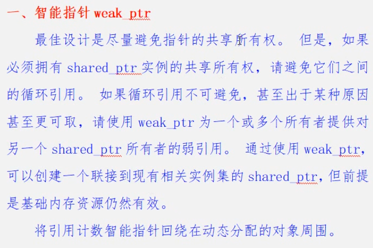
为什么要使用 weak_ptr指针: 为了解决 shared ptr 循环引用问题。
Linux客户端与服务器
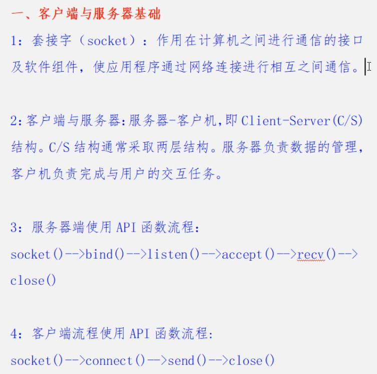
Linux IO 多路复用
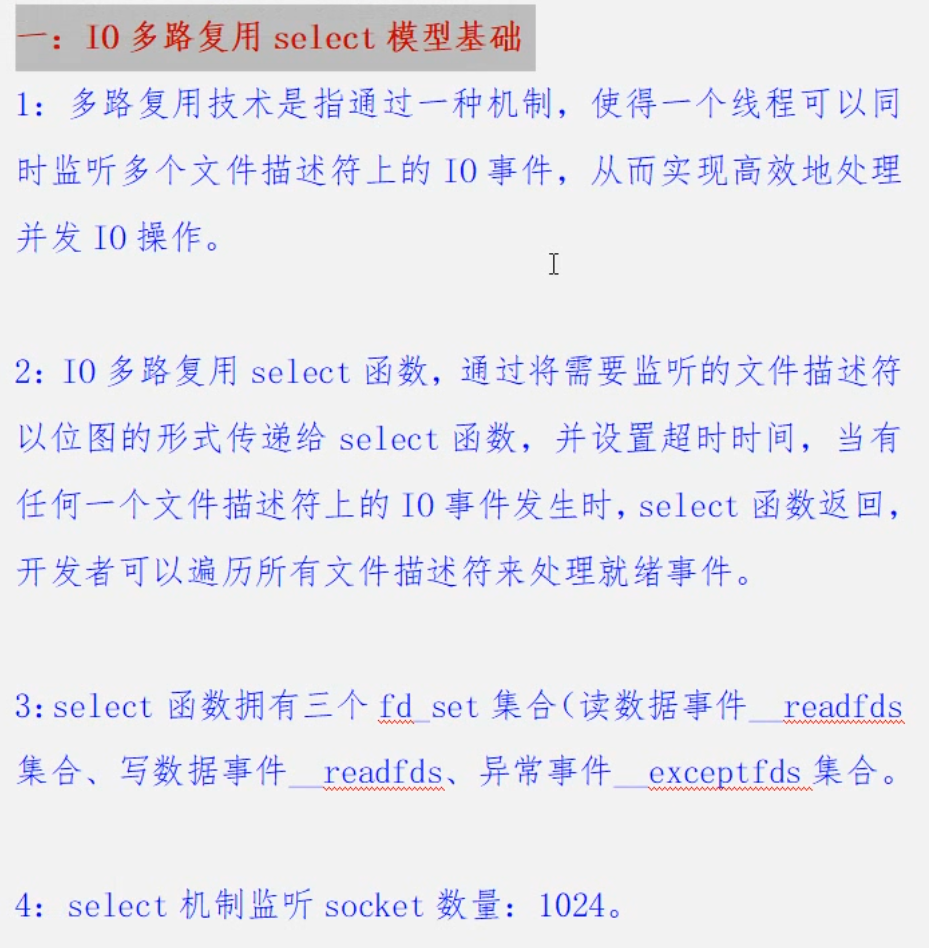